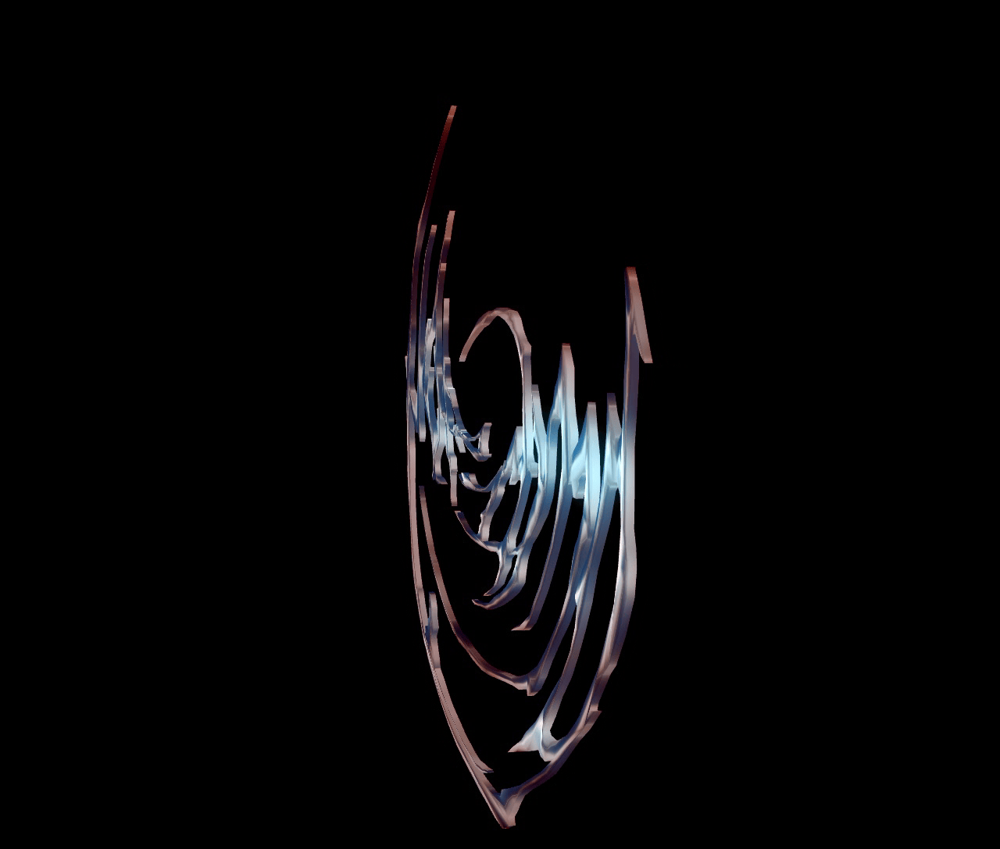
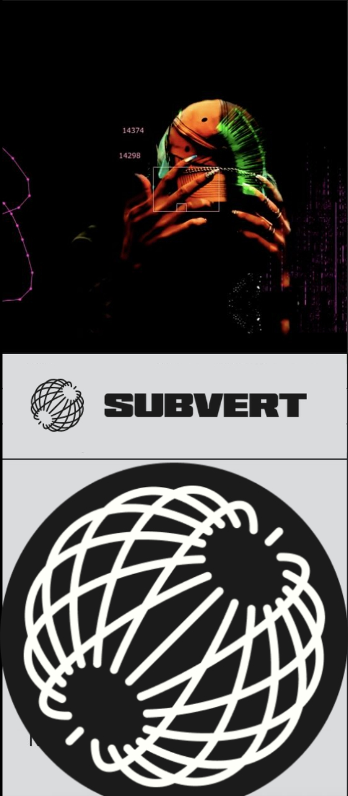

shows
- No shows currently announced. Check back later or go to the contact section for booking enquiries.
music

about
As hope.dmg I make Experimental Electronic music using a Dirtywave M8 tracker. My work is influenced by experimentations and mutations in a range of global and peripheral electronic genres, including Bruxaria and Experimental Funk, Kuduro, Footwork, Singeli, Gqom and Grime, as well as experimental Hip-Hop and Club sounds closer to home in Naarm, Australia.
My songs are made almost entirely on the M8 Tracker, a music-making device that came from the chiptune scene. With only 8 tracks and 4 built-in synths and a sampler, it has influenced the minimal approach to production that characterises a lot of my work so far. I also use the M8 Tracker when performing live, sometimes with a more DJ-like approach; cueing up original tracks for a dance floor, and sometimes with a more involved live approach; experimenting with synth and effects settings to see what noises I can make as part of my performance.
contact
- email: hope.dmg66@gmail.com
- instagram: @hope.dmg